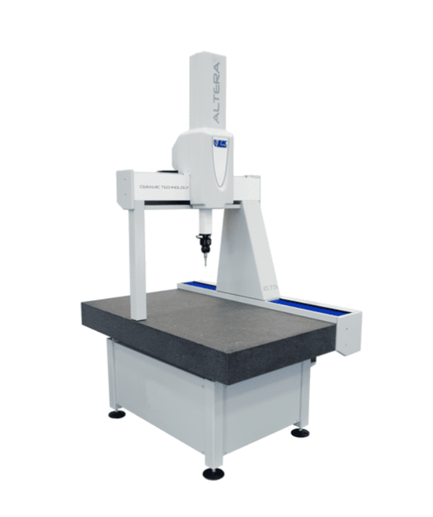
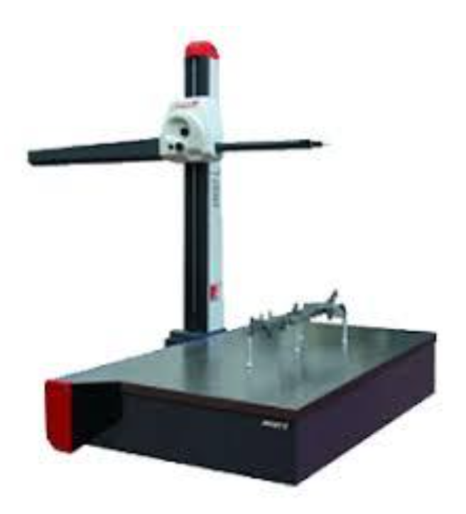
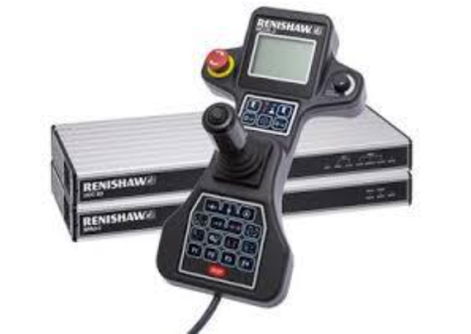
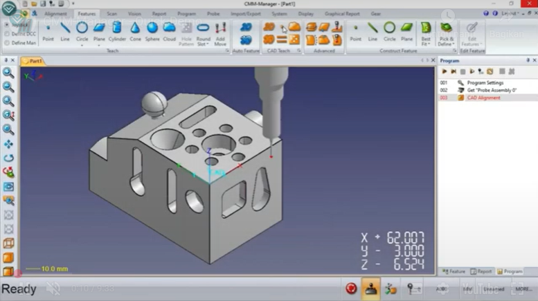
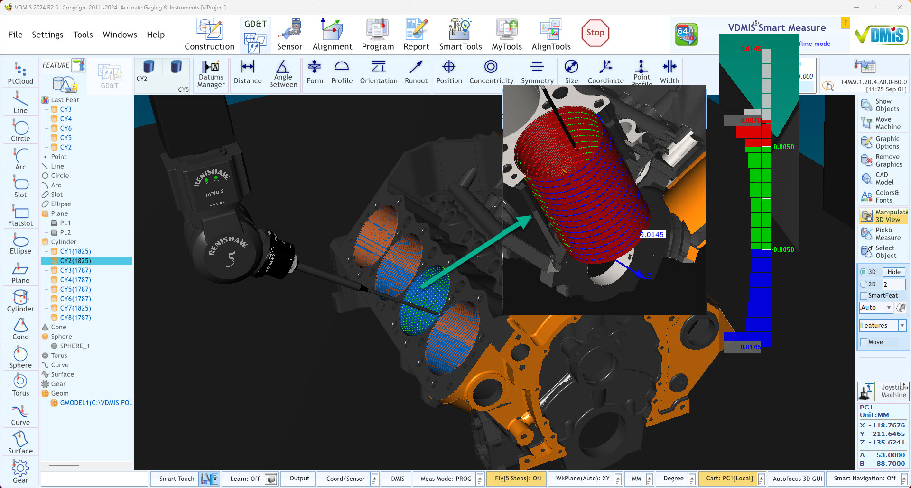
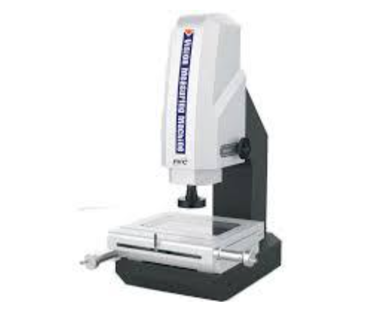
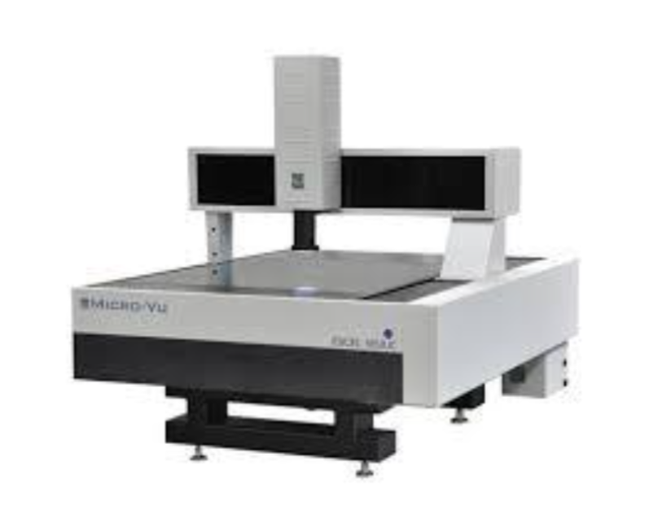
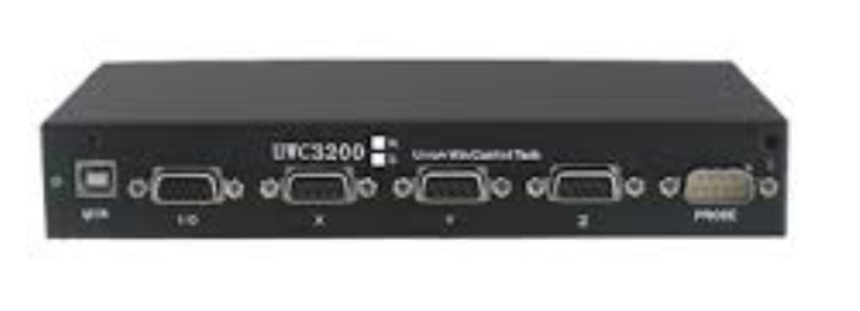
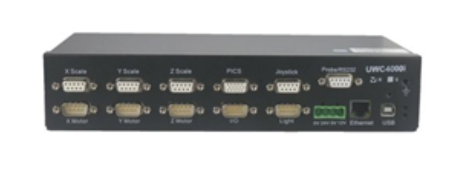
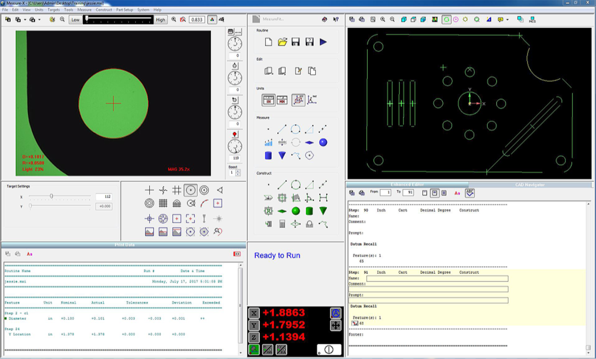

Retrofit Services
We provide retrofit services for your existing measuring machines with the latest technology, keeping your equipment investment optimal and compliant with current metrology standards.
What is Retrofit?
Retrofit is the process of upgrading existing measuring machines by replacing their electronics, control systems, computers, and software with modern technology without having to replace the entire machine.
Types of Retrofit
CMM Retrofit (Coordinate Measuring Machine)
CMM retrofit focuses on upgrading your coordinate measuring machines so they can deliver higher accuracy, better repeatability, and faster measurement cycles while using modern software and controllers.
- Replacement of outdated controllers and electronics.
- Integration with advanced CMM metrology software.
- Upgrade of probing systems, scales, and encoders.
- Improved reporting, data export, and connectivity.


RENISHAW UCC CONTROLLER
Control systems used for coordinating the motion of Coordinate Measuring Machines (CMMs)
and interfacing with various Renishaw sensors
https://www.renishaw.com/

Software Retrofit CMM

CMM Manager
A highly intuitive, task-oriented 3D metrology software
https://qxcmm.com/

VDMIS
3D CAD-based metrology software designed for Coordinate Measuring Machines (CMM)
https://www.vdmis.com/
VMM Retrofit (Video Measuring Machine)
VMM retrofit is dedicated to upgrading video measuring machines to enhance image processing, measurement speed, and ease of use with the latest vision-based metrology software.
- Upgrade of cameras, optics, and illumination systems.
- Installation of modern VMM measuring and analysis software.
- Improved motion control and automation capabilities.
- Better integration with quality management and reporting systems.


UWC3200
UWC4000


Software VMM

LeaderView 2D Measurement Software
Benefits of Retrofit
- Cost savings compared to purchasing a brand-new machine.
- Improved accuracy and reliability of measurements.
- Extended service life of the measuring machine.
- Integration with the latest metrology software.
Contact Us
For consultation on the feasibility of retrofitting your CMM or VMM, please contact us through the Contact page.